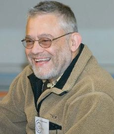

April 26, 1938
Contributions
Manuel Blum was one of the scientists who took up the challenge, which led to the creation of the CAPTCHA (completely automated public Turing test to tell computers and humans apart).
Background
Manuel Blum, (born April 26, 1938, Caracas, Venezuela), Venezuelan-born American mathematician and computer scientist and winner of the 1995 A.M. Turing Award, the highest honor in computer science, in “recognition of his contributions to the foundations of computational complexity theory and its application to cryptography and program checking.” He was educated at MIT, where he received his bachelor's degree and his master's degree in electrical engineering in 1959 and 1961 respectively, and his Ph.D. in mathematics in 1964 supervised by Marvin Minsky. He worked as a professor of computer science at the University of California, Berkeley until 2001. From 2001 to 2018, he was the Bruce Nelson Professor of Computer Science at Carnegie Mellon University, where his wife, Lenore Blum, was also a professor of Computer Science. In 2002, he was elected to the United States National Academy of Sciences. In 2006, he was elected a member of the National Academy of Engineering for contributions to abstract complexity theory, inductive inference, cryptographic protocols, and the theory and applications of program checkers. In 2018 he and his wife Lenore resigned from Carnegie Mellon University to protest against sexism after a change in management structure of Project Olympus led to sexist treatment of her as director and the exclusion of other women from project activities.